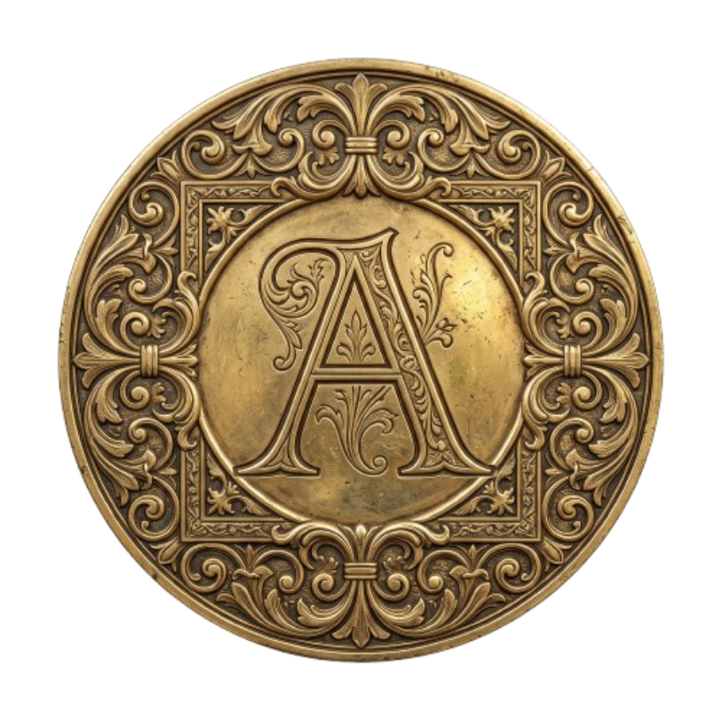

« Festina Lente »
Environnement d'artisanat littéraire et d'ingénierie éditoriale aux normes Amazon KDP. L'alliance de la typographie humaniste de la Renaissance vénitienne et d'une précision technique millimétrique.
L'ensemble des savoirs et des règles qui régissent la création d'un ouvrage d'exception.
L'espace où la technique se fait invisible pour laisser place à la création pure.
Une architecture forgée dans la rigueur du Rust et la modernité de Tauri v2.
Le cœur du système orchestre des outils de précision via des sidecars : l'un pour le traitement audio (aldus-audio-server) et l'autre pour la manipulation des flux (ffmpeg), tous deux intégrés via externalBin.
Une symbiose entre performance système et interface élégante.
Aldus est un environnement d'artisanat littéraire et d'ingénierie éditoriale aux normes Amazon KDP, inspiré par les maîtres imprimeurs de la Renaissance vénitienne. L'alliance de la typographie humaniste et d'une précision technique millimétrique permet de transformer un manuscrit brut en un objet livre d'exception.
L'état-civil du livre, mentions légales KDP et colophon historique. Renseignement des métadonnées éditoriales, du titre, de la signature d'auteur et de l'achevé d'imprimer.
Paramétrage mathématique de l'enveloppe extérieure. Déclaration de la pagination et choix rigoureux du papier d'imprimerie pour calculer automatiquement l'épaisseur du dos au centième de millimètre. Sélection du pelliculage, import des visuels des plats en haute définition (305 DPI) et composition du texte de la tranche.
Constitution du dossier de fabrication : PDF Imprimeur (Haute Définition), EPUB (Standard), jaquette 300 DPI et DOCX révisé.
L'acte solennel de l'Officine d'Aldus. Affiche le justificatif de tirage traditionnel, permet d'actionner la presse pour figer le volume dans ses 60 feuillets, et offre un accès direct au dossier des épreuves et au feuilletage du livre composé.